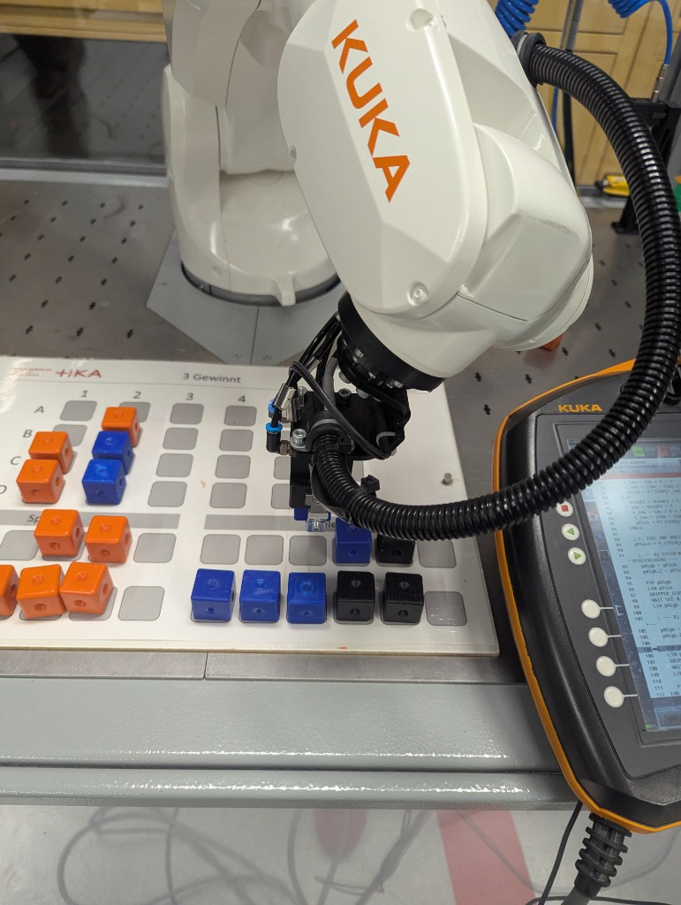
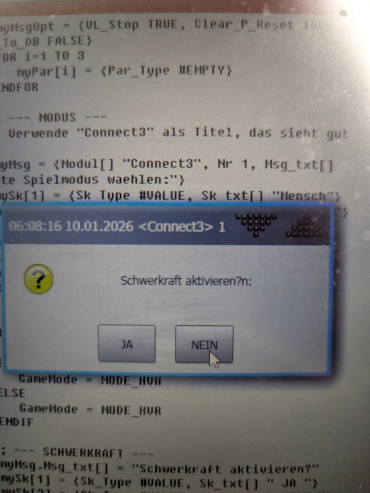
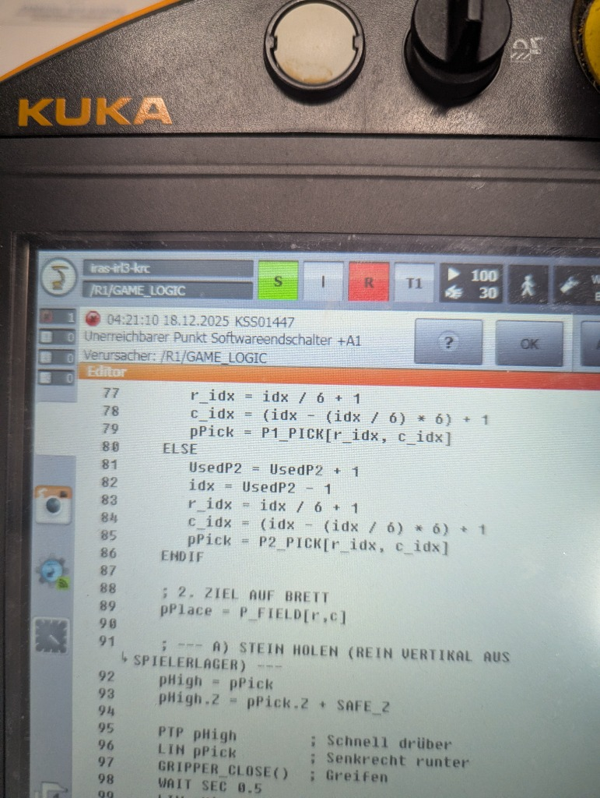
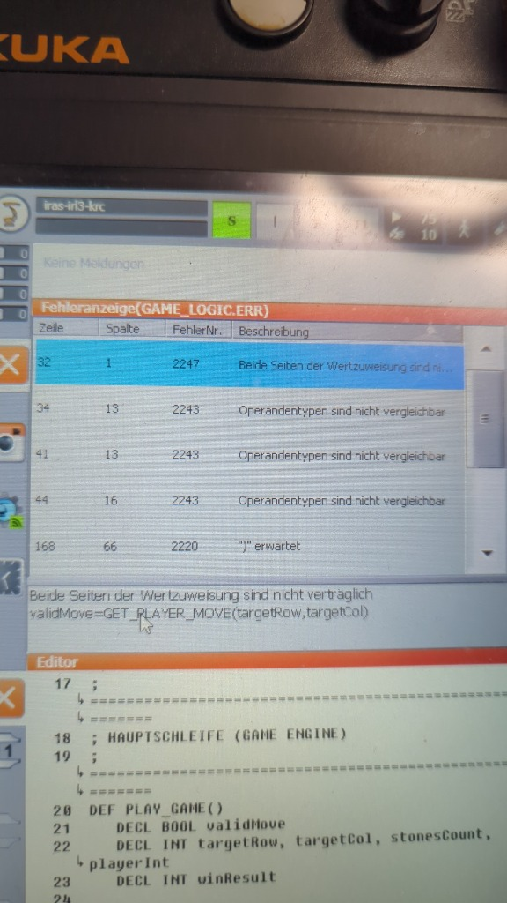

Analyse und Implementierung einer automatisierten "Connect Three" Anwendung auf einem KUKA KRC4 Industrieroboter
Entwicklung einer robusten Softwarelösung für einen KUKA-Industrieroboter, der das Spiel "Connect Three" autonom gegen einen Menschen oder gegen sich selbst spielen kann.


Projektziel
Ziel dieses Projektes war die Entwicklung einer robusten Softwarelösung für einen KUKA-Industrieroboter (Steuerung KRC4), der in der Lage ist, das Spiel "Connect Three" autonom gegen einen Menschen oder gegen sich selbst zu spielen.
Kernaussage
Das Projekt demonstriert die Interaktion zwischen komplexer High-Level-Logik (KI, Spielregeln) und Low-Level-Hardwaresteuerung (Kinematik, E/A-Signale).
Anforderungen (Lastenheft)
Gemäß dem Lastenheft ("2023-03-06-IRL-HeB-E-O-1") mussten folgende funktionale Anforderungen erfüllt werden:
- Spielfeld: Ein horizontales 6×4-Raster mit physikalischen Magazinen für Rote und Blaue Steine.
- Spielmodi: Drei Betriebsarten:
- Mensch gegen Mensch (Roboter als "Dealer")
- Mensch gegen Roboter (Interaktives Spiel)
- Roboter gegen Roboter (Autonome Demonstration)
- Softwarequalität: Modularer, dokumentierter und robuster Code.

Von der Einzeldatei zur modularen Lösung
In der frühen Entwicklungsphase wurde das Programm zunächst monolithisch strukturiert. Mit steigender Komplexität – insbesondere durch die Einführung der drei Spielmodi und der KI – zeigte sich, dass eine Modularisierung signifikante Vorteile für die Stabilität und Wartbarkeit bietet.
Die Trennung von Logik (GAME_CTRL) und Bewegung (ROBOT_MOTION) erlaubt
Tests ohne physische Roboterbewegung.
Durch Auslagerung in GAME_DATA.dat mit PUBLIC werden Zugriffskonflikte
vermieden.
ROBOT_MOTION stellt generische Funktionen bereit, die von allen Spielmodi genutzt
werden.
Schichten-Architektur (Layer Model)
| Modul | Rolle | Verantwortung |
|---|---|---|
| MAIN.src | Controller | State Machine. Verwaltet Programmfluss, Initialisierung und Replay-Loop. |
| GAME_CTRL.src | Model / Logic | Regelwerk & KI. Enthält virtuelles Spielbrett, berechnet Züge, prüft Gewinner. |
| ROBOT_MOTION.src | View / Hardware | Aktorik. Setzt logische Befehle in physische Bahnplanung um. |
| GAME_DATA.dat | Database | Globale Daten. Zentraler Speicher für Konstanten und Zustände. |
Die Zentrale Steuerung (MAIN)
Das Hauptprogramm implementiert eine robuste Schleife (LOOP ... ENDLOOP), die den
Produktionszyklus einer Roboterzelle simuliert.
IF firstRun == TRUE THEN
; Kapselung: Main weiß nicht, WIE gefragt wird, nur DASS gefragt wird.
skipSetup = ASK_SKIP_SETUP()
IF skipSetup == FALSE THEN
ROBOT_MOTION_SETUP() ; Hardware-Aufruf
ENDIF
ENDIFDie Spielmodi & KI-Logik (GAME_CTRL)
Hier residiert die "Intelligenz". Die Boolesche Logik für den Spielmodus wurde in eine Integer-Logik überführt, um den RvR Modus zu ermöglichen.
Der Entscheidungsprozess
Bevor ein Zug ausgeführt werden kann, muss das System entscheiden, aus welcher Quelle der Zug
stammt: Vom Touchpad (Mensch) oder vom Algorithmus (KI). Diese Weiche ist in
GET_PLAYER_MOVE implementiert.

Kinematik & Bahnplanung (ROBOT_MOTION)
Dieses Modul übersetzt die abstrakte Anweisung PERFORM_GAME_MOVE(row, col) in reale
Weltkoordinaten. Es nutzt den Referenzpunkt XP_FIELD_REF und die Spaltenabstände
DX_COL / DY_ROW.

Technischer Exkurs: Das "Status & Turn" Problem
Das Problem
Eine KRL-Koordinate vom Typ E6POS enthält neben kartesischen Koordinaten (X, Y, Z)
auch Achskonfigurationsdaten (Status und Turn).
- Status: Informationen über die Lage des TCP
- Turn: Vorzeichen der Achswinkel
Berechnet man einen Punkt rein mathematisch, bleiben S und T erhalten. Wenn der neue Punkt eine andere Achsstellung erfordert: "Position unerreichbar".
Die Lösung: Der "Frame-Trick"
Wir nutzen einen impliziten Cast auf den Datentyp FRAME (der S/T ignoriert).
DECL E6POS pTarget
DECL FRAME fMove
; 1. Zielpunkt holen
pTarget = P_FIELD[row,col]
; 2. Cast auf FRAME entfernt S und T
fMove = pTarget
; 3. PTP: Steuerung berechnet Achswinkel neu
PTP fMoveGlobale Variablen (GAME_DATA.dat)
| Variable | Typ | Beschreibung |
|---|---|---|
Board[4,6] |
INT | 2D-Array Spielzustand (0=Leer, 1=Rot, 2=Blau) |
GameMode |
INT | Aktiver Modus (0=HvH, 1=HvR, 2=RvR) |
UsedRed |
INT | Zähler verbrauchte rote Steine |
UsedBlue |
INT | Zähler verbrauchte blaue Steine |
Wichtige Funktionen
GET_AI_MOVE(myColor)– Gibt optimale Spalte (1-6) zurückGET_GRAVITY_ROW(col)– Simuliert Physik, iteriert von unten
PERFORM_GAME_MOVE(row, col, player)– Zentraler BewegungsblockROBOT_MOTION_SETUP()– Initialisiert SteinlagerCLEANUP_BOARD()– Räumt Spielfeld auf
Validiert im Modus T1 (Handbetrieb) und AUT (Automatik).
Kritischer Punkt: Eintauchen in Magazine. Parameter APP_Z auf 40.0mm justiert.
Im Modus "RvR" wurden 5 Spiele in Folge ohne Eingriff durchgeführt – stabile
UsedRed/UsedBlue Zähler.
Alle 4 Richtungen (horizontal, vertikal, 2× diagonal) wurden systematisch getestet.
Programm MAIN anwählen und Start drücken.
Setup-Frage "Sind die Lager voll?" wahrheitsgemäß beantworten.
Modus wählen: Mensch vs. Mensch, Mensch vs. Roboter, oder Demo RvR.
Schwerkraft-Option auswählen (JA/NEIN) für realistische Spielphysik.
Video: Demonstration des KUKA Connect Three Systems im Automatik-Betrieb.
Projektergebnis
Das Projekt "KUKA Connect Three" erfüllt alle Anforderungen des Lastenhefts. Die modulare Architektur ermöglicht eine einfache Wartung und Erweiterung, während der "Frame-Trick" eine robuste Bahnplanung sicherstellt.
Das System demonstriert eindrucksvoll das Zusammenspiel von High-Level-Algorithmen und Low-Level-Robotik. Die wichtigsten Erkenntnisse:
Trennung von Logik und Hardware ermöglicht unabhängige Tests und Wartung.
Der Frame-Trick löst das Status/Turn-Problem elegant und zuverlässig.
Die Architektur erlaubt einfache Erweiterung auf größere Spielfelder oder komplexere KI.
Bildergalerie: Entwicklungsprozess